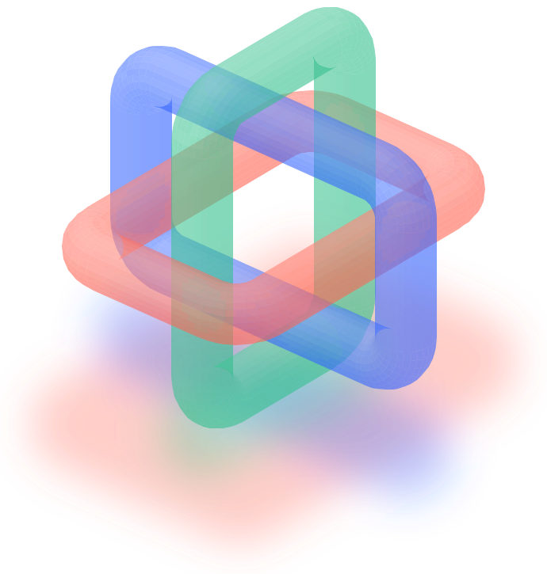

Revisiting the space–time tradeoff in BWT inversion¶
In 2001, Seward showed why the fastest way to undo a Burrows–Wheeler transform could use more instructions but less memory traffic. Twenty-five years later, that observation led us to ask whether a smaller navigation table could do more work per step and still come out ahead under contention. A first measurement of ours shows it doing so.

In 2001, Julian Seward, the author of bzip2 and the original designer of Valgrind, was working at Microsoft Research in Cambridge. That year he presented a paper at the IEEE Data Compression Conference, Space-time tradeoffs in the Inverse B-W Transform, on what it costs to undo the Burrows–Wheeler transform (BWT) that bzip2 is built on.
Compression with the BWT had been studied closely, but "decompression-time issues remain underinvestigated". He had two uses in mind that pull in opposite directions: booting a Linux kernel from a compressed image needs little memory, and an on-the-fly disk compressor needs speed. So he offers a family of algorithms that trade one for the other. At one extreme, the BWT can be inverted, slowly, in one byte of memory per byte of block. At the other:
we argue that the maximum speed of BWT decompression is unavoidably constrained by the rate at which cache misses are serviced.
mibz2 is our bzip2 decoder, written for the Wikidata dumps, and that sentence could stand over most of what we have written about it. Our posts on 32 lanes and memory-level parallelism are about keeping many misses in flight at once; memory interference is about four workers' misses competing for one memory system; compact navigation tables is about taking fewer misses with a smaller table. Seward said as much in bzip2's manual: "performance, both for compressing and decompressing, is largely determined by the speed at which your machine can service cache misses."
The post has two halves: how Seward's algorithms work and what he measured, then what happens to his tradeoff in mibz2, where several blocks decode at once and share one cache. The result in the second half is a controlled test of the walk alone, not yet of the whole decoder.
1. From sorted rotations to the transformation vector¶
Start with the word banana and see what the Burrows–Wheeler transform does to it.
First, write out six versions of the word, each starting at a different letter and wrapping
round to the beginning when it reaches the end: banana, ananab, nanaba, anaban,
nabana, abanan. These are the word's cyclic rotations: the same six letters, each time
in a different order. Then sort the six rotations alphabetically and stack them as rows:
The six rotations of banana, sorted
Read down the last column of the sorted rows, and it spells nnbaaa. The original banana is
in row 3, counting from zero. The transform keeps just those two things, the last column and
the row number, and stores nothing else. It doesn't make the block smaller; the reordered
letters compress better in bzip2's later stages, for a reason that comes below.
How can a decoder get banana back from only nnbaaa and 3? Each of Seward's algorithms
answers that question in a different way.
Seward names the pieces with letters, following Burrows and Wheeler's 1994 report A Block-sorting Lossless Data Compression Algorithm. On the same square:
Seward's names for the pieces
Decoding builds two more things of its own, which the rest of this section explains: \(C\), a count of each letter, and \(T\), which Seward calls the "transformation vector". The decoder's whole path, from what is stored back to the word:
What the decoder rebuilds
So the decoder is given \(L\) and \(I\) and must produce \(S\). It never holds \(M\): the inverse transform recovers just enough of it, from \(L\), to read off row \(I\).
Why the first and last columns. Every row of \(M\) is \(S\) read round from some starting point,
so in every row the last byte comes just before the first, going round \(S\). Row 3 ends in a
and starts with b, and the final a of banana comes, going round, before its opening
b. That is the relation the whole paper builds on: \(L[i]\) comes just before \(F[i]\) in \(S\). The
two columns carry different information:
- \(F\) is the bytes of \(S\) in sorted order, so the counts alone fix it. A decoder holding \(L\) can rebuild \(F\) by counting, so it is never sent.
- \(L\) holds the byte that precedes each row's opening context, with the rows sorted by
context. Bytes before similar contexts tend to repeat (in English,
heis often preceded byt), so \(L\) has long runs, which bzip2's later stages compress.
So a bzip2 block carries \(L\), with \(I\) to say which row is \(S\), and the decoder rebuilds the order of \(S\) from them with \(T\).
Defining \(T\). Seward's theory section is "a more detailed exposition of Algorithm D in §2 of [1]", Burrows and Wheeler's decompression algorithm, because "the increased detail exposes a range of possible implementations". Everything rests on "establishing the relationship between the \(F\) and \(L\) vectors, and recording this in the 'transformation vector' \(T\)":
Take row \(j\) and move its last byte to the front. That is another rotation of \(S\), so it is some
row \(i\) of \(M\), and \(T[j]\) records which. Row 0, abanan, becomes nabana, row 4, so \(T[0] = 4\).
Moving the last byte to the front starts the string one byte earlier in \(S\), so following \(T\)
walks \(S\) backwards.
Walking \(T\). Row \(T[j]\) starts with the byte row \(j\) ends with, which comes just before row \(j\)'s first byte in \(S\). So \(F[T[i]]\) precedes \(F[i]\). The decoder has \(L\), not \(F\), but \(L[k] = F[T[k]]\), and substituting gives a relation in \(L\) alone:
\(L[I]\) is the last byte of \(S\), so starting at \(I\) and following \(T\) gives \(S\) from the end:
rows visited: 3 → 0 → 4 → 1 → 5 → 2
bytes read: a n a n a b
Decoding banana by following T
That is banana backwards, and it is the whole inner loop of the inverse transform: load the
entry at \(p\), emit a byte, jump where it says. Where each jump lands depends on the content of
\(S\), not on the last jump. In a million-byte block that is a million loads from places the
cache has no reason to hold.
To write \(S\) forwards, Seward assumes the compressor reverses each block before sorting. bzip2
doesn't, which a footnote calls "a design flaw"; by the manual's account, "the bzip2 format
was frozen before I properly and fully understood the performance consequences". Its decoder
builds the links the other way instead, writing \(i\) into slot \(s\) where Seward would set
\(T[i] = s\) (tt[cftab[uc]++] |= i << 8), and following that \(T^{-1}\) emits \(S\) forwards. mibz2
does the same, so its navigation table holds \(T^{-1}\): each entry points forwards, to the row
whose string starts one byte later in \(S\).
Building \(T\) from counts. The rows of \(M\) are sorted, and two rows ending in the same byte keep their order when that byte moves to the front, since the rest of each row decides it. So the \(k\)-th \(c\) in \(L\) rotates into the \(k\)-th row starting with \(c\): "if \(c\) occurs \(k\) times in \(L[0..j]\) and \(L[j] = c\), then \(T[j]\) must be \(i\), where \(i\) is the position of the \(k\)-th \(c\) in \(F\)."
T matches each L byte to the same occurrence in F
The \(c\)'s in \(F\) form one bucket. Turning the counts in \(C\) into running totals gives where each
bucket starts: \(C[c]\) becomes the number of bytes smaller than \(c\) (for banana, a 0, b 3,
n 4). So
and one scan of \(L\) with a running count per byte value builds \(T\). Within each byte value the links increase with \(j\). Every BWT has this ordering, and our compact table depends on it.
2. Making inversion fast: basis, bw94 and mergedTL¶
"How fast can inversion be?" Three algorithms, each refining the last, answer it.
basis is the theory written out: count, build \(T\), walk. It reads \(L\) three times and keeps \(L\) (one byte a row) and \(T\) (four) alive: \(5N\) bytes.
bw94, named for Burrows and Wheeler's report, merges the first two passes by recording \(T'[i]\), the number of earlier occurrences of \(L[i]\), while counting. That is \(T\) without its bucket's start, \(T[i] = T'[i] + C[L[i]]\), and the walk adds the start back. Two passes, still \(5N\) bytes.
mergedTL comes from looking at bw94's walk, which reads \(L[p]\) and \(T'[p]\) at the same arbitrary index: "Unless both \(T\) and \(L\) fit in the machine's cache, this could cause two (capacity) misses per iteration." So it packs both into one 32-bit word, limiting \(N\) to \(2^{24}\):
The name is literal: \(T\) and \(L\), merged. Each step unpacks the byte with a mask and the link with a shift, which costs instructions, "but the near-halving of the cache miss rate is potentially valuable". The table is also a byte a row smaller: \(4N\).
What one row costs, bit by bit
bzip2 uses mergedTL, with the reversed link stored as an absolute position, so its walk needs no \(C[c]\) addition. Its manual credits the change with a real gain: "Single array implementation of the inverse BWT. This significantly speeds up decompression, presumably because it reduces the number of cache misses."
3. Spending less memory: indexF and the trees¶
"Can we reduce memory use whilst retaining useful decompression speed? Interestingly, yes." The relation in \(F\), \(F[T[i]]\) precedes \(F[i]\), needs only \(T\) to walk. If the decoder reads the output bytes from \(F\) instead of \(L\), it needs \(L\) only while it builds \(T\), so \(T\) can be written over it. \(F\) needn't be stored either: it is sorted, so the 256 running totals in \(C\) describe it, and \(F[p]\) is the byte whose bucket contains \(p\). "No free lunch, alas": finding it is a binary search in \(C\).
indexF, named for indexing into \(F\), keeps \(T\) alone in \(N\) 20-bit words (so \(N \le 2^{20}\)): a 16-bit
array plus a nibble array, \(2.5N\) bytes. It starts the walk at \(T[I]\), because reading \(F\), the
byte \(L[I]\) is found at \(F[T[I]]\). bzip2 ships it as -s, "a modified algorithm which only
requires 2.5 bytes per block byte … albeit at about half the normal speed", with the search
as BZ2_indexIntoF. What it gives up:
- A search per byte, eight or nine comparisons where mergedTL has a mask. The 1 KB of counts stays in cache, so the search costs instructions, not misses, and since the next position is \(A[p]\) alone, a processor can overlap it with the next load.
- Two arrays again. The 20-bit entry is split between the 16-bit array and the nibbles, so a step can touch two cache lines, the cost mergedTL removed.
- A cap of \(2^{20}\) bytes per block, which bzip2's 900,000-byte maximum fits.
The trees. "It is instructive to ask just how little storage we can get away with": \(L\) and the counts alone. Any \(T[j]\) is \(C[c]\) plus the number of \(c\)'s before \(j\) in \(L\), but counting them means scanning \(L\), \(O(N)\) a step and \(O(N^2)\) in all: "absurdly inefficient". Seward buys speed back with 256 binary trees of partial counts, one per byte value. Each node counts its byte in an aligned power-of-two segment of \(L\), an empty subtree costs nothing, and a node budget sets how deep the trees grow. To count the \(c\)'s up to \(j\), descend \(c\)'s tree, adding the left child's count whenever \(j\) lies to the right, and scan \(L\) only for the last segment.
A count tree answers a rank query
tree stores a node in three 32-bit words. treeopt packs a node into 54 bits, two words, and a leaf into one, fitting nearly twice as many nodes in the same space, which halves the scans. With \(L\), tree-1M and treeopt-1M take \(2N\) bytes and treeopt-500k \(1.5N\).
4. What Seward measured¶
The machine was a 400 MHz AMD K6-III with 128 MB of memory and a 256 KB second-level cache. Each block, at most 10⁶ bytes, was inverted ten times. How much memory each algorithm needs for a 10⁶-byte block:
| Algorithm | Memory | Seward's description |
|---|---|---|
basis |
5000 kB | Straightforward derivation from theory |
bw94 |
5000 kB | As per [1], does 2 passes, not 3 |
mergedTL |
4000 kB | As bw94 but more cache-friendly |
indexF |
2500 kB | Indexes into \(F\) rather than \(L\) |
tree-1M |
2000 kB | Computes \(T\) incrementally; 1 megabyte extra space |
treeopt-1M |
2000 kB | More space-economical version of tree-1M |
treeopt-500k |
1500 kB | As treeopt-1M but with only 500k auxiliary space |
He tested them on six files of at least a megabyte, four from the Canterbury Corpus. The last column names the nearest of mibz2's benchmark corpora, loosely:
| File | kB | What it is | Nearest in mibz2's corpora |
|---|---|---|---|
| bible | 4047.4 | The King James Bible | text, though ours is source code, repeated |
| world192 | 2473.4 | The CIA World Factbook, 1992 | none: Wikidata's subject matter, not its format |
| ecoli | 4638.7 | The E. coli genome, in four letters | none |
| kennedy | 1029.7 | An Excel spreadsheet | runs, and at the extreme onebyte |
| netscape | 7678.8 | Netscape Navigator 4.75, an x86 executable | records, binary |
| bashtgz | 1708.8 | bash 2.04's source, gzipped | random |
How fast each algorithm inverted each file, in MB/s. mergedTL is the fastest on every one:
| basis | bw94 | mergedTL | indexF | tree-1M | treeopt-1M | treeopt-500k | |
|---|---|---|---|---|---|---|---|
| bashtgz | 1.54 | 1.58 | 2.49 | 1.20 | 0.032 | 0.059 | 0.032 |
| bible | 1.72 | 1.77 | 2.76 | 1.36 | 0.211 | 0.301 | 0.218 |
| ecoli | 1.53 | 1.57 | 2.48 | 1.30 | 0.325 | 0.342 | 0.339 |
| kennedy | 2.46 | 2.54 | 4.72 | 1.71 | 0.099 | 0.167 | 0.100 |
| netscape | 2.32 | 2.41 | 3.51 | 1.67 | 0.044 | 0.099 | 0.036 |
| world192 | 1.65 | 1.69 | 2.65 | 1.31 | 0.207 | 0.298 | 0.198 |
| Average | 1.86 | 1.93 | 3.10 | 1.43 | 0.153 | 0.211 | 0.154 |
The paper gives these numbers only as tables. Plotting each algorithm's average speed against its memory shows the space–time tradeoff between them:
Seward's measured speed–memory choices
It isn't a smooth curve on which each saved byte costs speed. mergedTL is "on average 61% and 67% faster than bw94 and basis respectively, at the same time using less memory": it beats both on both axes, by changing how the next link is read. indexF runs at 46% of its speed in 62.5% of its memory. Below that, half a byte a row less costs a factor of seven.
Seward then asks why. Simulating the K6-III's cache with cacheprof, his own profiler, he counted per byte of bible:
| instructions | memory references | misses | |
|---|---|---|---|
| bw94 | 18.00 | 9.00 | 1.63 |
| mergedTL | 20.00 | 8.00 | 0.88 |
mergedTL runs 11% more instructions and takes 54% as many misses. 89.4% of those misses are the walk's reads of \(U[p]\), and 78.6% of those reads miss, because \(T\) holds "a completely arbitrary permutation" that the decoder "is obliged to traverse". So "there appears to be no way to avoid a miss rate approaching one per \(L\)-byte", and mergedTL is "a realistic upper bound on inversion performance".
kennedy inverts nearly twice as fast as bashtgz because its long runs make \(T\) point each row at its neighbour, which is usually already cached; random input sets the floor near 2.5 MB/s. And the tree algorithms vary 10:1 across files, against mergedTL's 1.9:1, because a small alphabet such as ecoli's four letters lets a few deep trees shorten every scan.
Why the walk misses, and why runs help
bzip2 itself decompresses bible at 67% of mergedTL's inversion rate, while also doing its Huffman and move-to-front decoding, so "no amount of re-engineering of bzip2 can increase its decompression speed much further". The paper ends on a caveat:
Such observations only hold true whilst cache sizes are much smaller than block sizes. Future growth in cache sizes may invalidate such findings.
5. The same tradeoff, with four blocks live¶
The K6-III's cache held 256 KB, against mergedTL's 4 MB for one block. Our workstation has a 20 MiB last-level cache, and a full bzip2 block, up to 900,000 rows at 4 bytes each, needs a 3.6 MB table. Read literally, the caveat has come true.
Two things kept Seward's sentence true anyway. A modern core keeps many misses in flight if it is given independent loads, so mibz2's walk advances 32 separate pieces of the chain in turn and runs 8.6 times as fast as one chain. And a decoder doesn't invert one block at a time. Four workers keep four tables live, 14.4 MB before any of their other buffers, in one cache they all share, and decoding with four costs more CPU time per byte than decoding with one: the workers finish sooner together, but compete for the memory system on the way. With the cache divided between blocks, caches are again much smaller than the tables being walked.
On Seward's axes a smaller table is a step down in speed. With four blocks sharing a cache, it also leaves more of the cache to the other three. Could the same links be stored in much less space, and would the lighter memory load make up for the extra work of reading a compressed entry? The first valid comparison answers both ways at once. The compact walk costs 14.85% more CPU time on one core and 15.95% less with four workers walking together. That result is about this traversal, measured on its own; what it means for the whole decoder is still open.
6. A smaller table, a busier lookup¶
The census of the navigation table found that most of its links follow simple patterns. An earlier format built on that, FOR-14, packed 14-bit offsets into fixed records. It halved the table, but extracting the packed bits made each step so much longer that the walk lost even with four workers, where it took 1.45 times as long as the ordinary walk.
Compact30 keeps each offset directly addressable instead. Its name means thirty rows per record, not thirty-bit pointers. A 64-byte record, aligned to a cache line, holds thirty 16-bit offsets and a 4-byte header. In an ordinary record the header carries a base position and the byte the thirty rows all output, and a row's next position is the base plus its offset. A group of rows that start with different bytes, or whose next positions are too far apart for 16-bit offsets, is stored instead as a RAW group: thirty full 4-byte entries, padded to 128 bytes.
One ordinary compact30 record
On the measured corpus that brings the table from 4 bytes per row to 2.164, 45.9% less: about 1.95 MB for a full block instead of 3.6 MB, and 7.79 MB instead of 14.4 MB for four blocks at once.
Read against Seward's paper, the record combines three of its ideas. Its offsets rest on the ordering that makes \(T\) cheap to build: within one byte's bucket the links increase with the row, so a group's links are a base plus small offsets, smallest where the byte's occurrences in \(L\) sit close together, as in kennedy's runs. In Wikidata's blocks they usually do: about 77% of a full block's rows fall in 32-row groups that each come from a single run in \(L\). The header's byte is indexF's idea, emitting from \(F\) so that the walk needs no \(L\), with one byte stored per group in place of a search. And keeping the header and the offset in one cache line is mergedTL's. At 2.164 bytes a row, the record sits between treeopt-1M and indexF on Seward's memory axis, and aims at mergedTL's speed.
The step costs more, though. An ordinary compact30 step compiles to 21 instructions and four data loads; the conventional step is 16 instructions and three loads. Two of compact30's loads, the offset and the header, are both addressed from the current row, so neither waits for the other, but they are still two loads where the conventional step needs one. The walker's journal has the annotated disassembly.
So the question is which matters more when several cores share the machine: the extra instructions, or the smaller table.
7. The four-worker reversal¶
The comparison times two versions of the same traversal and assembly. The control walks mibz2's 4-byte table; compact30 walks its records with the same 32-lane walk. Every walk's output was checked byte for byte against the decoder's.
Only the walk is timed. Before each walk, the control builds its table with the decoder's own builder, while compact30 copies in records made beforehand by a reference builder, so the comparison measures how fast each prepared table is walked, not what it costs to build. The two preparations may also leave different data in cache.
The protocol used one corpus of 434 blocks (207 million rows) and 20 paired rounds, on one pinned core or four. With four, each worker prepared its next block, all four started walking together, and none checked its output until all had finished, with blocks dealt so that each worker had about the same number of rows. CPU cost is the threads' own CPU time, summed, per row. Completion time is the time from the first walk's start to the last walk's end in each step, summed over the steps. Neither is the decoder's elapsed time.
| Conventional | Compact30 | Compact30 ÷ conventional (95% interval) | |
|---|---|---|---|
| CPU time per row, one core | 1.221 ns | 1.402 ns | 1.148 (1.147–1.149) |
| CPU time per row, four workers | 2.055 ns | 1.727 ns | 0.840 (0.838–0.843) |
| Completion time per pass, four workers | 114.45 ms | 97.97 ms | 0.856 (0.852–0.860) |
The intervals describe variation across the twenty rounds, on one machine and one corpus. Before the run, the protocol fixed what would justify building a direct constructor: the upper end of the four-worker CPU ratio at most 0.865, and of the completion ratio at most 1.02. The upper ends were 0.843 and 0.860. The analysis and an independent reconstruction from the individual walks agree on every figure.
CPU time per row, one core and four workers
The gain is spread across the workload. All 230 full-sized blocks were cheaper with compact30 at four workers, taking each block's average over the rounds, and compact30 used less CPU in 1,138 of the 1,140 full-sized four-worker steps. These are checks within one experiment, on blocks that repeat each round, not independent trials. The 204 short blocks were slower with compact30, but together they hold 8,324 rows, 0.004% of the total.
The run also had to show that the four walks started together, within 2% of each step's length. An earlier complete run failed that check, because waking sleeping workers delayed some walks by tens of microseconds, and it doesn't count. This run used a spinning start barrier instead, with nothing else changed; its worst start skew was 0.023%.
8. Four workers cost the conventional walk far more¶
From one core to four workers, the conventional walk's CPU cost per row rises from 1.221 ns to 2.055 ns, 68% more. Compact30's rises from 1.402 ns to 1.727 ns, 23% more. Both run under the same four-worker conditions, and the conventional table pays much more for them.
FOR-14 showed the same pattern earlier: from one block to four, the conventional walk's cost per row rose 56% and FOR-14's only 8%. Its smaller table removed most of the four-worker penalty, but each of its steps started 1.40 ns per row behind, three times what it saved. Compact30's step is cheap enough to come out ahead.
The obvious explanation is the table's size. Four conventional tables take about 14.4 MB, four compact30 tables about 7.79 MB, and the test machine's four cores share a 20 MiB last-level cache with everything else the workers use. Smaller tables could mean fewer evictions and less contention for memory, and they could also change address-translation costs.
Navigation tables for four full blocks
That explanation hasn't been tested. The run recorded no cache-miss or memory-controller counters, and the two arms prepared their tables differently before each walk, which by itself could change what is in cache when the walk starts. The size difference makes the cache explanation credible; it doesn't measure it.
The result also stops short of the decoder. A decoding worker doesn't spend all its time walking tables: it also reads input, reconstructs the last column, builds the table, assembles segments and writes output. Some of its walks run alone, and others overlap two or three neighbours rather than all four. So compact30's 14.85% loss on one core matters as much as its gain at four, and how much of a whole decode runs under four-way contention hasn't been measured.
9. The table still has to be built¶
The records in this comparison came from a reference builder that first computes every row's successor in a full-sized temporary array, then converts the result into compact30 records. That kept construction out of the measurement, but a decoder can't afford it. A direct builder has to produce the records from the block's last column and its byte counts, without the temporary array.
It also has to compete with the decoder's current builder, which places every row in one counting-sort pass and writes runs of sixteen equal bytes sixteen entries at a time. Compact30's builder has to write group headers, check offsets against the 16-bit limit, and move groups to RAW, and still stay close to that.
The traversal result sets the budget. A rough planning model puts the decoder's current table building at 0.592 CPU-seconds per decoded GB, and the traversal with its assembly at 1.847. If b and w are compact30's building and traversal costs as fractions of today's, the saving is about 0.592 × (1 − b) + 1.847 × (1 − w) CPU-seconds per GB, and the target is at least 0.25.
If the four-worker traversal ratio carried over to the decoder, a builder costing the same as today's would save about 0.295 CPU-seconds per GB. The builder could be up to 7.5% slower than today's at the central estimate, or 6.7% using the conservative end of the interval. That is a budget conditional on the traversal gain surviving inside the decoder, built on approximate phase costs; meeting it would justify the next test, not settle the question.
The next step is a design for that builder, set out in the constructor brief. Its main difficulty is already clear. Groups that straddle two bytes' rows can be found from the byte counts before any row is placed, but a group whose offsets turn out too wide is only known when its last row lands, and has to move to RAW then. The builder has to produce exactly the records tested here, and the first measurements will be whether it does and what it costs. After that, a whole-decoder comparison can show how much of the four-worker gain survives in practice.
For now, a smaller navigation table has beaten the conventional one in a controlled four-worker traversal while losing on a single core. That is a strong reason to study the memory contention behind it, and a concrete budget for building the table.
Research records: Traversal protocol and the runs behind it · This result's records · Independent reconstruction · Compact30 walker · FOR-14 trial.